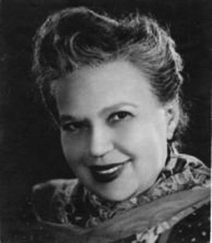
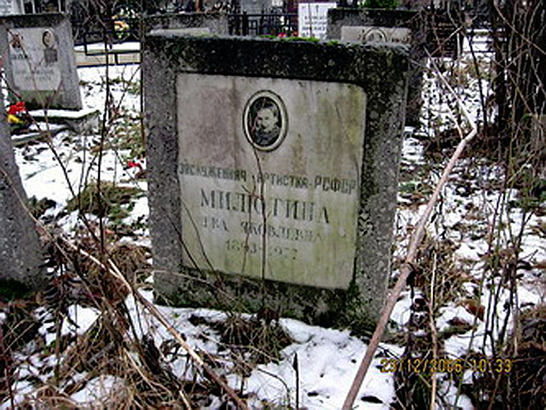

My Aunt, Yeva Milyutina
Ева Милютина
I got this information concerning my mom's sister, my Aunt Yeva, by searching for her name in Russian, Ева Милютина, on the Internetnote. I was thrilled when I found this page in Russian (which I've captured in the screenshot, below). To see Google's translation, simply click on the below screenshot. (Clicking on it again will toggle it back to Russian.) The translation is adequate; though there are some obvious translation errors, it's readable and understandable. I can't speak to the content, though I assume it is accurate.
The pictures of my Aunt Yeva I've been able to find look exactly like what I would've expected, somewhat like my own mother (who was 23 years younger than my Aunt Yeva). Compare my mom's picture here with the picture of Yeva in the below article.
She also looks a lot like my mom's other sisters. (My mom had 6 sisters and one brother. Mom was the youngest.) This makes it very easy to identify her when she appears on screen in her movies.
My mom
The biographical information, though quite sparse, is priceless to me. Her birthplace, Taganrog (Таганрог), is described in Wikipedia as
{kind=link}
Taganrog (Russian: Таганрог, IPA: [təɡɐnˈrok]) is a port city in Rostov Oblast, Russia, located on the north shore of the Taganrog Bay (Sea of Azov), several kilometers west of the mouth of the Don River.
And the list of the various places she lived in is also quite interesting. (Here's a map of the Black Sea area with the cities mentioned in the below article circled.) The fact that she was married also piques my interest, especially as to whether she had any children, some possible first cousins in a world far, far away.
{kind=link}
The acronym in "Honored Artist of the RSFSR (1934)" in the article below stands for "Russian Soviet Federative Socialist Republic" which is what we formerly knew as the Soviet Union.
The website also contains these two pages about Yeva:

Aunt Yeva
- http://www.kino-teatr.ru/kino/acter/w/sov/25228/bio/ (a short bio)
- http://www.kino-teatr.ru/kino/acter/w/sov/25228/foto/ (some photos from her films. I've captured some here in case the Russian website http://www.kino-teatr.ru ever goes away.)

And finally, here's a link to the complete 1 hour and 8 minute black and white silent movie (with English subtitles) from 1927, The Girl With The Hat Box, where my aunt (when she was 34 years old) plays Marfusha (Марфушка, taken from the opening credits), a somewhat comical servant girl. She appears only briefly in this film:
- around 10:37, on and off screen until about 14:41, with a very interesting appearance starting at 11:59 for about a half minute
- around 24:45 just for a couple of seconds
- around 27:31, on and off screen until about 31:26
- around 39:49, only till about 40:15, but probably the best shots of her
- around 49:44 just for an instant
- around 59:19, again, just for a few seconds
- around 1:02:04 (that's her with the fork!), her final appearance, watch until at leat 1:02:30
So, all in all, she has a relatively small role in this film, but at least we can see her at work. (The video file for this film is on my Google drive, so, depending on your Internet speed, it may or may not play smoothly without pausing/buffering.)